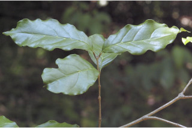
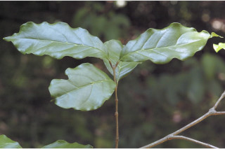
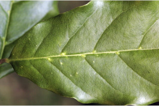
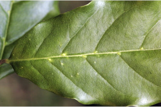

Trees up to 15 m tall.
15 ಮೀ. ಎತ್ತರದವರೆಗಿನ ಮರಗಳು.
Trees up to 15 m tall.
மரங்கள் 15 மீ. உயரம் வரை வளரக்கூடியது.
Bark whitish-brown, lenticellate; blaze orange.
ತೊಗಟೆ ಬಿಳಿ ಛಾಯೆಯುಳ್ಳ ಕಂದು ಬಣ್ಣದಲ್ಲಿದ್ದು ವಾಯುವಿನಿಮಯ ಬೆಂಡು ರಂಧ್ರಗಳ ಸಮೇತವಿರುತ್ತವೆ; ಕಚ್ಚು ಮಾಡಿದ ಜಾಗ ಕಿತ್ತಳೆ ಬಣ್ಣದಲ್ಲಿರುತ್ತದೆ.
Bark whitish-brown, lenticellate; blaze orange.
மரத்தின் பட்டை வெள்ளை-ப்ரவுன் நிறமானது, பட்டைத்துளைகள் (லெண்டிசெல்லேட்) உடையது; உள்பட்டை ஆரஞ்ச்.
Young branchlets subquadrangular, lenticellate, glabrous.
ಎಳೆಯ ಕಿರುಕೊಂಬೆಗಳು ಉಪ ಚತುಷ್ಕೋನ ಹೊಂದಿದ್ದು, ವಾಯುವಿನಿಮಯ ಬೆಂಡು ರಂಧ್ರಗಳ ಸಮೇತವಿರುತ್ತವೆ ಹಾಗೂ ರೋಮರಹಿತವಾಗಿರುತ್ತವೆ.
Young branchlets subquadrangular, lenticellate, glabrous.
சிறியநுனிக்கிளைகள் குறுக்குவெட்டுத் தோற்றத்தில் நான்கு கோணங்களுடையது, பட்டைத்துளைகள் (லெண்டிசெல்லேட்) உடையது, உரோமங்களற்றது.
Leaves simple, opposite, decussate; petiole 1-2 cm long, canaliculate; lamina 6-12 x 3-5.8 cm, elliptic to elliptic-obovate, apex acuminate, base attenuate, margin entire and slightly wavy, glabrous, chartaceous; midrib slightly canaliculate; secondary_nerves 4-8 pairs; hairy domatia present in the axils; tertiary_nerves reticulate.
ಎಲೆಗಳು ಸರಳವಾಗಿದ್ದು ಕತ್ತರಿಯಾಕಾರದ ಅಭಿಮುಖ ಜೋಡನಾ ವ್ಯವಸ್ಥೆಯಲ್ಲಿರುತ್ತವೆ; ಎಲೆತೊಟ್ಟುಗಳು1 – 2 ಸೆಂ.ಮೀ.ವರೆಗಿನ ಉದ್ದವಿದ್ದು, ಕಾಲುಗೆರೆ ಸಮೇತವಿರುತ್ತವೆ; ಪತ್ರಗಳು6 -12 X 3-5.8 ಸೆಂ.ಮೀ. ಗಾತ್ರ, ಅಂಡವೃತ್ತದಿಂದ ಅಂಡವೃತ್ತ-ಬುಗುರಿವರೆಗಿನ ಆಕಾರ, ಕ್ರಮೇಣ ಚೂಪಾಗುವ ಮಾದರಿಯ ತುದಿ, ಒಳಬಾಗಿದ ಮಾದರಿಯ ಬುಡ, ನಯವಾದ ಅಥವಾ ಕೊಂಚ ತರಂಗಿತವಾದ ಅಂಚು, ರೋಮರಹಿತ ಮತ್ತು ಕಾಗದವನ್ನೋಲುವ ಮೇಲ್ಮೈ ಹೊಂದಿರುತ್ತವೆ; ಮಧ್ಯನಾಳ ಮೇಲ್ಭಾಗದಲ್ಲಿ ಸ್ವಲ್ಪ ಮಟ್ಟಿಗೆ ಕಾಲುವೆ ಗೆರೆಯನ್ನು ಹೊಂದಿರುತ್ತದೆ;ಎರಡನೇ ದರ್ಜೆಯ ನಾಳಗಳು 4 ರಿಂದ 8 ಜೋಡಿಗಳಿರುತ್ತವೆ;ರೋಮ ಸಹಿತವಾದ ಸಹಜೀವಿ ಗೂಡುಗಳು ಅಕ್ಷಾಕಂಕುಳಿನಲ್ಲಿರುತ್ತವೆ;ಮೂರನೇ ದರ್ಜೆಯ ನಾಳಗಳು ಜಾಲಬಂಧ ನಾಳ ವಿನ್ಯಾಸದಲ್ಲಿರುತ್ತವೆ.
Leaves simple, opposite, decussate; petiole 1-2 cm long, canaliculate; lamina 6-12 x 3-5.8 cm, elliptic to elliptic-obovate, apex acuminate, base attenuate, margin entire and slightly wavy, glabrous, chartaceous; midrib slightly canaliculate; secondary_nerves 4-8 pairs; hairy domatia present in the axils; tertiary_nerves reticulate.
இலைகள் தனித்தவை, எதிரடுக்கமானவை, குறுக்குமறுக்கானவை; இலைக்காம்பு 1-2 செ.மீ. நீளமானது, குறுக்குவெட்டுத் தோற்றத்தில் கேனாலிகுலேட்; இலை அலகு 6-12 X 3-5.8 செ.மீ., நீள்வட்ட வடிவானது முதல் நீள்வட்ட-தலைகீழ் முட்டை வடிவானது, அலகின் நுனி அதிக்கூரியது, அலகின் தளம் அட்டனுவேட், அலகின் விளிம்பு முழுமையானது மற்றும் சிறிது அலை போன்றது, உரோமங்களற்றது, சார்ட்டேசியஸ்; மையநரம்பு மேற்புறத்தில் அலகின் பரப்பைவிட சிறிது பள்ளமானது; இரண்டாம் நிலை நரம்புகள் 4-8 ஜோடிகள்; உரோமங்களுடைய டொமேசியா நரம்புகளின் கோணங்களில் கொண்டவை; மூன்றாம் நிலை நரம்புகள் வலைப்பின்னல் போன்றவை.
Inflorescence trichotomous cymes, terminal or axillary; flowers bisexual, cream-white.
ಪುಷ್ಪಮಂಜರಿಗಳು 3- ಕವಲೊಡೆದ ಮಧ್ಯಾರಂಭಿ ಮಾದರಿಯವುಗಳಾಗಿದ್ದು ಅಕ್ಷಾಕಂಕುಳಿನಲ್ಲಿ ಅಥವಾ ತುದಿಯಲ್ಲಿರುತ್ತವೆ;ಹೂಗಳು ದ್ವಿಲಿಂಗಿಗಳಾಗಿದ್ದು ಕೆನೆ-ಬಿಳಿ ಬಣ್ಣ ಹೊಂದಿರುತ್ತವೆ.
Inflorescence trichotomous cymes, terminal or axillary; flowers bisexual, cream-white.
மஞ்சரி மும்முறை கிளைத்த சைம் வகை, மஞ்சரி தண்டின் நுனியில் காணப்படும் அல்லது இலைக்கோணங்களில் காணப்படுபவை; மலர்கள் இரு பாலானவை, கிரீம் நிறமானது-வெள்ளை நிறமானது.
Drupe, ovoid, brownish-black when ripe; seed one.
ಡ್ರೂಪ್ಗಳು ಅಂಡಾಕಾರದಲ್ಲಿದ್ದು,ಕಳಿತಾಗ ಕಂದು ಛಾಯೆಯುಳ್ಳ ಕಪ್ಪು ಬಣ್ಣದಲ್ಲಿರುತ್ತವೆ; ಬೀಜ ಒಂದು.
Drupe, ovoid, brownish-black when ripe; seed one.
உள்ளோட்டுத்தசைகனி (ட்ரூப்), முட்டை வடிவானது, கனியும் போது ப்ரவுன் நிறமானது-கருப்பு நிறமானது; ஒரு விதையுள்ள கனி.


 

 
